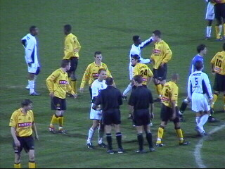
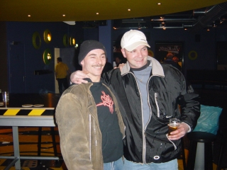

|
Roda JC - NAC (0-0) 15 maart 2003 |
Exact een jaar na de vorige editie treden de
spelers aan voor Roda JC-NAC.
Veel supporters van NAC (600-700)!
In een matige wedstrijd was de gemiste kans
van Anastasiou een van de hoogtepunten.
Bossen deelde geen enkele kaart uit.

Ook bij dit opstootje niet.
NAC speelde even beroerd als Roda en
verprutste derhalve alle hele en halve kansen.
Twee die-hards evalueren de eerste helft ;-)
Ondertussen werd er een pauze-act gehouden
door een bal-kunstenaar.
Schitterende kopbal van Cristiano.
Een van de superkansen in de slotfase....

....wordt ook in de rebound verprutst.

0-0, niemand is er echt ongelukkig mee.....
Toch maar even afbieren in de Kik. Geloof het
of niet maar de gast uiterst rechts is de BOB.

Deze gasten wilden ook nog even op de foto.
Het after-afbieren geschiedde in het louche
Gebronx ;-)